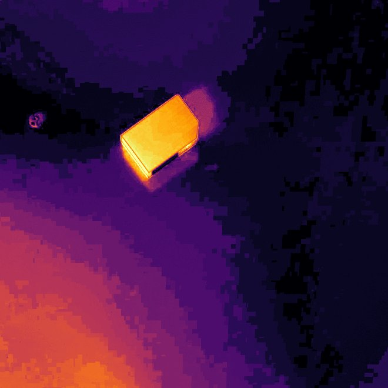
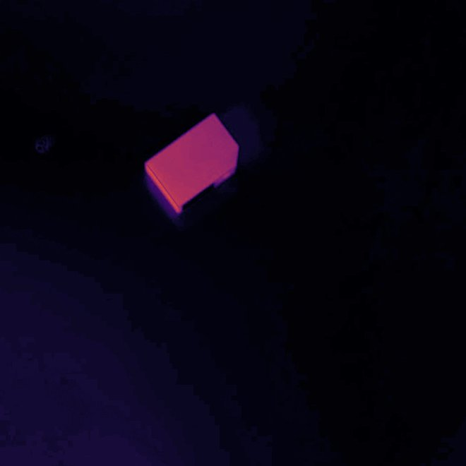
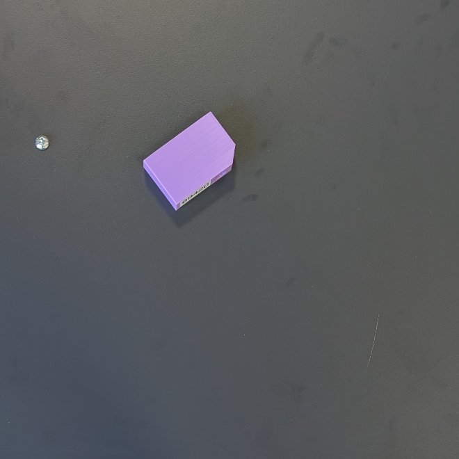

Objekterkennung mit der Top-down-Kamera
M1 findet in einem Kamerabild von oben den Arbeitsbereich über vier ArUco-Marker, rechnet das Bild in eine verzerrungsfreie Draufsicht um, segmentiert das Bauteil und bestimmt seine Lage (x, y) und Drehung θ. Der Roboter bekommt diese Pose direkt in seinem eigenen Koordinatensystem.
01Auf einen Blick
Eingabe
Ein Farbbild der Top-down-Kamera (geplant 1920 × 1080 px). Auf dem Tisch liegen die vier
ArUco-Marker (IDs 0–3, DICT_4X4_50) und genau ein Bauteil, ein violetter
3D-Druck-Quader mit einer abgeschrägten Ecke (Fase).
Ausgabe
Eine ObjectPose im Roboter-Basis-KS: x_mm, y_mm,
z_mm (Tischhöhe), theta_deg und confidence
(1,0 mit Fase, 0,5 ohne). Liegt kein Bauteil im Bild, kommt None zurück. Der
Orchestrator wertet das nicht als Fehler, sondern geht wieder in IDLE.
Die Verarbeitung besteht aus sechs Stufen. Jede ist eine eigene, kleine Funktion:
„Wir verwenden klassische Bildverarbeitung ohne trainiertes Modell. Die Marker legen den Arbeitsbereich fest, daraus rechnen wir eine maßstabsgetreue Draufsicht. Darin trennen wir das Bauteil über Helligkeit und Buntheit vom Tisch. Die abgeschrägte Ecke macht die Orientierung eindeutig, und eine einmal eingemessene Transformation liefert die Pose im Roboterkoordinatensystem.“
02Einordnung im System
Ein zentraler Orchestrator (orchestrator/state_machine.py) arbeitet jeden Zyklus als
Zustandsautomat ab. M1 ist nur im ersten Zustand DETECT beteiligt. Danach
entscheidet ausschließlich die gelieferte ObjectPose, wohin der Roboter fährt.
Die Module kennen sich gegenseitig nicht. Sie tauschen nur die Datenklassen aus
common/interfaces.py aus. M1 implementiert das Interface ObjectDetector
mit einer einzigen Methode:
class ObjectDetector(ABC): # common/interfaces.py
def detect(self) -> ObjectPose | None: ...
@dataclass
class ObjectPose: # Pose im Roboter-Basis-KS
x_mm: float; y_mm: float; z_mm: float
theta_deg: float
confidence: float = 1.0Die ObjectPose geht an den Greifer: standardmäßig M2, alternativ M4 (KI-Greifen mit der
Handgelenkkamera), der sie als Startpunkt nutzt.
03Aufbau des Codes
Das wichtigste Gestaltungsprinzip ist die Trennung zwischen Bildverarbeitung und
Kamerazugriff. Die TopDownPipeline bekommt ein Bild und liefert eine Pose,
eine Kamera braucht sie dafür nicht. Dadurch läuft derselbe Code mit Live-Kamera, mit gespeicherten
Fotos und in automatischen Tests.
Dateien
TopDownPipeline (Ablauf der Verarbeitung), TopDownDetector (Kamera + Pipeline, implementiert ObjectDetector), MockDetector, TopDownResult mit Debug-Bildern.Workspace (Homographie, Maßstab, Umrechnung px ↔ mm). find_workspace_aruco() und die Rückfallebene find_workspace_white_frame().segment_part() (Maske, Morphologie, Kandidatenwahl), part_pose() (Schwerpunkt, Längsachse, Fase), draw_part_pose().logs/m1.Im Gesamtsystem baut orchestrator/factory.py den Detektor je nach Variante:
mock replay (Testfotos als Kamera)
camera.
04Verarbeitung Schritt für Schritt
Die Bilder unten hat die echte Pipeline erzeugt (TopDownPipeline.process(img, trace)).
Es sind die Testfotos vom 05.10.2026 aus dem Labor. Oben lässt sich das Foto wechseln.
05Arbeitsbereich & Homographie
M1 arbeitet mit drei Koordinatensystemen. Wer sie sicher erklären kann, versteht das ganze Modul:
Warum eine Homographie?
Der Tisch ist eine Ebene. Zwei Bilder derselben Ebene hängen über eine projektive Abbildung zusammen,
eine 3 × 3-Matrix H mit 8 Freiheitsgraden. Jede Punktkorrespondenz (Markermitte im Bild ↔ bekannte
Position in mm) liefert 2 Gleichungen, die vier Marker also genau die 8 Gleichungen, die nötig sind.
cv2.findHomography berechnet H, cv2.warpPerspective rechnet damit das
Bild in die Draufsicht um.
# workspace.py, find_workspace_aruco()
src = [Markermitte_im_Bild[i] for i in (0, 1, 2, 3)] # Pixel
dst = [mm_to_rect(*markers_mm[i]) for i in (0, 1, 2, 3)] # Ziel-Pixel der Draufsicht
H, _ = cv2.findHomography(src, dst)Vorteil: Die Kamera muss weder exakt senkrecht noch mittig hängen, und sie darf sich sogar verschieben. Da die Marker in jedem Bild neu gesucht werden, gleicht die Homographie eine bewegte Kamera automatisch aus.
Gilt nur für die Tischebene. Die Oberseite des Bauteils liegt einige Millimeter höher und erscheint dadurch leicht verschoben (Parallaxe). Siehe „Grenzen“.
Rückfallebene: weißer Rahmen
find_workspace_white_frame() sucht alternativ die Innenkante eines hellen, ungesättigten
Rahmens (größte viereckige, innen liegende Kontur) und nimmt ihre vier Ecken als Korrespondenzen. Mit
workspace.method: auto wird zuerst ArUco versucht und bei einem Fehlschlag der Rahmen.
Am aktuellen Aufbau gibt es keinen weißen Rahmen mehr, deshalb steht die Methode auf aruco.
06Segmentierung: Bauteil vom Tisch trennen
Die Regel lautet: Bauteil = deutlich heller ODER deutlich bunter als der Tisch. Als Referenz für den Tisch dient der Median über die ganze Draufsicht. Das Bauteil bedeckt nur einen kleinen Teil davon und verschiebt den Median deshalb kaum.
# part.py, segment_part()
v = HSV-Hellwert V
chroma = sqrt((a - 128)² + (b - 128)²) # Buntheit im Lab-Farbraum
mask = (v > median(v) + 50) | (chroma > median(chroma) + 20)Designentscheidung: Lab-Chroma statt HSV-Sättigung
In einer ersten Fassung stand hier die HSV-Sättigung S. Auf den Laborfotos spiegelte sich unten links ein bläulicher Schimmer auf der dunklen Platte. S = (max − min) / max teilt durch die Helligkeit. Bei dunklen Pixeln wird deshalb schon ein schwacher Farbstich stark aufgebläht. Der Reflex lag dann teilweise über der Schwelle, wurde als Bauteil gewählt oder verschmolz mit ihm. Die Chroma im Lab-Farbraum misst die Buntheit dagegen unabhängig von der Helligkeit.


Bei S liegt der Reflex (rot) über der Schwelle. Bei C* liegt die Schwelle deutlich zwischen Reflex und Bauteil, mit viel Abstand nach beiden Seiten. Mit dieser Regel wird das Bauteil auf allen fünf Fotos korrekt segmentiert.
Warum relative statt fester Schwellen? Wird das Raumlicht heller, steigen Tisch und Bauteil gemeinsam an, und der Median zieht die Schwelle mit. Otsu wäre eine Alternative, setzt aber ein deutlich zweigipfliges Histogramm voraus. Das fehlt, wenn ein kleines Bauteil auf einer großen Fläche liegt.
Danach folgen das Ausblenden des Randes, Öffnen (3 × 3), Schließen (7 × 7) und die Konturen.
Kandidaten mit plausibler Fläche zwischen min_area_mm2 und max_area_mm2
bleiben übrig, und die größte davon ist das Bauteil. Gibt es keinen Kandidaten, meldet M1 „kein
Bauteil“.
07Pose & Fase: warum θ eindeutig ist
- Position: Der Flächenschwerpunkt der Kontur aus den Bildmomenten (u = m10/m00, v = m01/m00).
- Längsachse: Die lange Seite des kleinsten umschließenden Rechtecks (
cv2.minAreaRect). - Richtung: Ein Quader sieht nach einer Drehung um 180° von oben gleich aus. Erst die Fase
(abgeschrägte Ecke) unterscheidet die beiden Enden. An der Fase liegt genau eine Rechteckecke
deutlich außerhalb der Kontur. Ist ihr Abstand größer als 8 % der Bauteilbreite
(
chamfer_min_frac), zeigt die Achse zu dieser Ecke, und θ ist im Bereich 0–360° eindeutig. - Ohne Fase: θ wird auf 0–180° begrenzt und
confidence = 0,5gesetzt.
Fasenerkennung ausprobieren
Grün gestrichelt ist das minAreaRect, der gelbe Kreis die Ecke
mit dem größten Abstand d zur Kontur. Wird die Fase kleiner als die Schwelle, kann der Pfeil um 180°
falsch herum stehen. Das Bauteil läge dann an der Prüfstation mit dem Etikett von der Kamera weg.
Ein Detail aus detector.py: Im Bild zeigt v nach unten, im Arbeitsbereich y nach oben.
Deshalb wird beim Umrechnen die y-Koordinate gespiegelt und das Vorzeichen des Winkels umgekehrt:
theta_ws = (−theta_img) mod 360.
08Vom Arbeitsbereich ins Roboter-KS
Die Draufsicht hat einen festen Maßstab. Pixel → mm ist deshalb eine einfache Division:
x = u / 2, y = 330 − v / 2. Danach überführt eine ebene
Starrkörpertransformation (Drehung + Verschiebung, ohne Skalierung) die Pose in das
Roboter-Basis-KS:
x_r = cos(φ)·x − sin(φ)·y + t_x # common/transforms.py, rigid_2d()
y_r = sin(φ)·x + cos(φ)·y + t_y
θ_r = θ + φ
z_r = table_z_mm # Bauteil liegt flach auf dem TischDie Parameter φ, tx, ty werden einmalig eingemessen (gemeinsam mit M2): Der
Roboter fährt mit der Greiferspitze die vier Markermitten an. fit_workspace_to_robot()
berechnet daraus per Least Squares (Kabsch-Verfahren über SVD) die beste Drehung und Verschiebung
und gibt den Restfehler je Marker aus. Mehr dazu auf der M2-Seite.
Klick in die Draufsicht → Koordinaten
Klicke auf einen Punkt der entzerrten Draufsicht (Foto 1). Die Umrechnung
verwendet dieselben Formeln und Kalibrierwerte wie der Code (workspace_to_robot:
φ = 0,35°, t = (205,1 | −319,7) mm, z = 2,1 mm).

Das Gitter hat 50 mm Abstand. Das Kreuz markiert den Schwerpunkt, den M1 auf diesem Foto erkannt hat: (137,2 | 214,8) mm im Arbeitsbereich = (340,9 | −104,1) mm im Roboter-KS.
09Ergebnisse auf den Laborfotos
Fünf Handyfotos vom Aufbau (05.10.2026). Foto 1–3 zeigen dieselbe Szene aus drei verschiedenen Höhen, Foto 4 und 5 andere Lagen. Die Werte stammen direkt aus der Pipeline.
| Foto | x_ws | y_ws | θ_ws | x_robot | y_robot | θ_robot | Größe [mm] | Fase |
|---|---|---|---|---|---|---|---|---|
| 1 | 137,2 | 214,8 | 36,4° | 340,9 | −104,1 | 36,8° | 64,5 × 43,3 | ja |
| 2 | 136,9 | 215,2 | 36,4° | 340,7 | −103,7 | 36,7° | 67,5 × 45,5 | ja |
| 3 | 136,8 | 215,6 | 36,4° | 340,6 | −103,2 | 36,7° | 69,1 × 46,4 | ja |
| 4 | 62,9 | 114,3 | 83,8° | 267,3 | −205,0 | 84,2° | 66,5 × 43,3 | ja |
| 5 | 237,3 | 97,2 | 192,5° | 441,8 | −221,0 | 192,9° | 68,4 × 43,5 | ja |
Wiederholbarkeit: Bei Foto 1–3 (gleiche Szene, andere Kamerahöhe) schwankt die Position um weniger als 1 mm und der Winkel um 0,1°. Das zeigt, dass die Homographie die Perspektive zuverlässig herausrechnet.
Gemessene Größe schwankt zwischen 64–69 × 43–46 mm. Die Ursache ist die Parallaxe: Je nach Blickwinkel sind Seitenflächen sichtbar und werden mitsegmentiert. Auf den Schwerpunkt wirkt sich das weniger aus als auf die Kantenlängen.
10Konfiguration (config/system.yaml)
Alle Zahlenwerte stehen in der Konfiguration, nicht im Code. Bearbeiten lassen sie sich auch in der GUI unter Einstellungen.
| Schlüssel | Wert | Bedeutung |
|---|---|---|
topdown_camera.source | 0 | Kameranummer oder Bild-Glob (Replay der Testfotos) |
workspace.method | aruco | aruco | white_frame | auto |
workspace.size_mm | [330, 330] | Größe des Arbeitsbereichs: Markermitten 400 mm auseinander, je 35 mm nach innen versetzt, damit das Markerpapier draußen bleibt |
workspace.markers_mm | 0: (−35, −35) … | Markermitten im Arbeitsbereich-KS. Die Zuordnung ID → Ecke muss stimmen. |
workspace.px_per_mm | 2.0 | Auflösung der Draufsicht |
workspace.border_mm | 5.0 | ausgeblendeter Randstreifen |
part_topdown.brightness_delta | 50 | V über dem Tisch-Median |
part_topdown.chroma_delta | 20 | Lab-Chroma über dem Tisch-Median |
part_topdown.min/max_area_mm2 | 300 / 20 000 | plausible Bauteilfläche |
part_topdown.chamfer_min_frac | 0.08 | Mindestabstand der Fasen-Ecke relativ zur Breite |
workspace_to_robot | 0,35° · (205,1 | −319,7) · z 2,1 | Kalibrierung Arbeitsbereich → Roboter |
11Testen & Bedienen
Kommandozeile (aus code/)
# Pipeline auf die Testfotos, Debug-Bilder in logs/m1
python -m m1_vision_topdown.run "m1_vision_topdown/tests/data/*.jpg"
# Druckbare Marker mit weißem Rand
python -m m1_vision_topdown.make_markers
# Tests
pytest m1_vision_topdownGUI (python -m gui)
Tab M1 Erkennung: Quelle wählen (Testbilder, Kamera, Datei), Bild holen + analysieren, optional Live. Angezeigt werden das Kamerabild mit Overlay und die Draufsicht mit Pose.
Tab Ablauf: Erkennung mock / replay / camera / KI. Mit + Zwischenschritte
werden alle Bilder dieser Seite unter logs/<datum>/…/steps/ gespeichert.
Tab M2 → Zeigetest: M1 erkennt das Bauteil, der Roboter zeigt darauf. Das ist der Praxistest für M1 und die Kalibrierung zusammen.
Teststrategie
- Synthetische Szenen (
tests/test_topdown.py): Ein Bauteil wird mit bekannter Pose in ein perspektivisch verzerrtes Bild gezeichnet. Prüfung: Fehler < 2 mm und < 2°, für ArUco und Rahmen. - Echte Fotos als Regressionstest: Die bekannten Ergebnisse dürfen sich durch Codeänderungen nicht verschlechtern.
- MockDetector: liefert Zufallsposen, damit Orchestrator und M2 ohne Kamera laufen.
12Grenzen, Entscheidungen & offene Punkte
| Thema | Stand / Begründung |
|---|---|
| Klassische BV statt KI | Ein einzelnes, bekanntes Bauteil auf einem kontrastreichen Tisch. Dafür reicht klassische BV, die ohne Trainingsdaten auskommt, jeden Schritt nachvollziehbar macht und schnell läuft. KI-Greifen wird in M4 untersucht (für das Greifen selbst, die Erkennung bleibt bei M1). |
| Parallaxe | Die Homographie gilt nur für die Tischebene. Die Oberseite des Bauteils liegt höher und erscheint verschoben, außerdem werden sichtbare Seitenflächen mitsegmentiert. Abhilfe: Kamera hoch und senkrecht über der Mitte montieren; optional eine Korrektur über die Bauteilhöhe. |
| Linsenverzeichnung | Eine intrinsische Kalibrierung nach Zhang ist vorgesehen (calibration_file), wird aber noch nicht verwendet. |
| Marker-Quiet-Zone | Die ersten 3D-gedruckten Marker hatten keinen hellen Rand und verschmolzen mit der dunklen Platte. Lösung: Marker mit weißem Rand (make_markers.py). |
| Fase nicht erkannt | Dann gilt confidence 0,5, und θ ist nur bis auf 180° eindeutig. Das Teil könnte gedreht an der Prüfstation landen. |
| Ein Bauteil | Projektabgrenzung: Es liegt genau ein Teil im Arbeitsbereich, gewählt wird die größte Kontur. |
| Offen | Feste Top-down-Kamera montieren und Belichtung fixieren, Genauigkeitsmessung über N Zeigetests (logs/point_tests.csv). |
13Präsentation: Kernaussagen & mögliche Fragen
Die fünf Sätze, die sitzen sollten
- Vier ArUco-Marker definieren den Arbeitsbereich, eine Homographie macht daraus eine maßstabsgetreue Draufsicht (2 px/mm).
- Das Bauteil ist „deutlich heller oder bunter als der Tisch“, mit Schwellen relativ zum Median, also robust gegen Lichtänderungen.
- Wir verwenden Lab-Chroma statt HSV-Sättigung, weil die Sättigung auf dunklem Untergrund Reflexe aufbläht. Das war ein echter Fehler auf den Laborfotos.
- Schwerpunkt aus den Bildmomenten, Längsachse aus dem minAreaRect, und die Fase macht θ über 0–360° eindeutig.
- Eine eingemessene 2D-Starrkörpertransformation liefert die Pose direkt im Roboter-KS. Gleiche Szene aus drei Höhen ergibt < 1 mm Abweichung.
Mögliche Fragen
Warum braucht man überhaupt eine Homographie? Reicht nicht ein Maßstab?
Ein einzelner Maßstab gilt nur, wenn die Kamera exakt senkrecht über dem Tisch hängt. Sonst ist das Bild perspektivisch verzerrt, und weiter entfernte Bereiche erscheinen kleiner. Die Homographie korrigiert genau diese projektive Verzerrung der Tischebene. Vier Punkte reichen, weil H 8 Freiheitsgrade hat.
Was passiert, wenn ein Marker verdeckt ist?
Dann wirft find_workspace_aruco einen VisionError, und der Orchestrator geht
in den Fehlerzustand. Mit nur drei Punkten wäre die Homographie nicht eindeutig bestimmt. Eine
Rückfallebene ist der weiße Rahmen (method: auto). Denkbar wäre auch, die letzte
gültige Homographie wiederzuverwenden, solange die Kamera fest montiert ist.
Wie genau ist die Erkennung?
Auf den Fotos ist sie bei gleicher Szene auf < 1 mm und 0,1° wiederholbar. Die synthetischen Tests prüfen < 2 mm / 2°. Die absolute Genauigkeit im Roboter-KS hängt zusätzlich von der Kalibrierung ab und wird mit dem Zeigetest gemessen: Der Roboter zeigt auf das erkannte Bauteil, der Versatz wird protokolliert. Zielwert ±2 mm / ±2°.
Warum nicht einfach Otsu-Schwellwert oder Hintergrundsubtraktion?
Otsu braucht ein zweigipfliges Histogramm. Bei einem kleinen Teil auf einer großen Platte ist der Bauteil-Gipfel aber winzig. Hintergrundsubtraktion bräuchte ein aktuelles Leerbild und reagiert auf Lichtänderungen. Unsere relative Schwelle (Median + Δ) braucht beides nicht.
Was ist der Unterschied zwischen HSV-Sättigung und Lab-Chroma?
Die Sättigung S = (max − min) / max ist relativ zur Helligkeit. Ein dunkles Pixel mit leichtem Farbstich bekommt deshalb ein hohes S. Die Chroma C* = √(a*² + b*²) ist der Abstand von der Graudiagonale im Lab-Raum und unabhängig von der Helligkeit. Gemessen: Tisch C* ≈ 2, Reflex ≈ 9, Bauteil 40–52. Das ist eine klare Trennung.
Funktioniert das auch mit einem anderen Bauteil oder einer anderen Farbe?
Die Segmentierung ja, solange sich das Teil in Helligkeit oder Buntheit vom Tisch abhebt. Die Fasenerkennung ist dagegen auf dieses Bauteil zugeschnitten. Ein anderes asymmetrisches Merkmal bräuchte eine angepasste Richtungsbestimmung, z. B. über Template-Matching oder Momente höherer Ordnung. Bei symmetrischen Teilen reichen 0–180°.
Wie kommt die Pose ins Roboterkoordinatensystem?
Über eine 2D-Starrkörpertransformation (Drehung φ + Verschiebung t). Sie wird einmal eingemessen, indem der Roboter die vier Markermitten anfährt. Ein Least-Squares-Fit (Kabsch/SVD) liefert φ und t sowie den Restfehler je Marker. Ein RMS über 3 mm deutet auf vertauschte IDs oder schlecht angefahrene Punkte hin.
Was ist mit der Bauteilhöhe, wenn die Kamera nur die Oberseite sieht?
Das ist die Parallaxe, eine bekannte Grenze. Die Homographie gilt für die Tischebene, die Oberseite liegt höher und wird deshalb leicht nach außen verschoben abgebildet. Der Effekt ist klein, wenn die Kamera hoch und senkrecht über der Mitte hängt. Eine Korrektur über die bekannte Bauteilhöhe wäre möglich.
Wie lässt sich das ohne Hardware testen?
Die Pipeline ist kamerafrei. Die Variante replay spielt Fotos als Kamera ab, Unit-Tests
erzeugen synthetische Bilder mit bekannter Pose, und der MockDetector entkoppelt M2/M3 komplett.
Dadurch lief der Gesamtablauf, bevor die Kamera montiert war.
14Glossar
- ArUco-Marker
- Quadratische Schwarz-Weiß-Codes mit eindeutiger ID, die OpenCV robust und subpixelgenau findet.
- Homographie
- 3 × 3-Matrix, die eine Ebene projektiv auf eine andere abbildet (8 Freiheitsgrade, aus 4 Punktpaaren bestimmbar).
- Draufsicht / Rektifizierung
- Mit H umgerechnetes Bild, als würde die Kamera senkrecht von oben schauen; fester Maßstab.
- HSV / Lab
- Farbräume. HSV: Farbton, Sättigung, Hellwert. Lab: Helligkeit L* und zwei Farbachsen a*, b*; Chroma = √(a*² + b*²).
- Morphologie
- Öffnen entfernt kleine Störungen, Schließen füllt kleine Lücken in Binärmasken.
- Kontur
- Umrisslinie einer zusammenhängenden Fläche in der Maske (
cv2.findContours). - Bildmomente
- Gewichtete Summen über die Fläche; m00 = Fläche, (m10/m00, m01/m00) = Schwerpunkt.
- minAreaRect
- Kleinstes gedrehtes Rechteck, das die Kontur umschließt; seine lange Seite ist die Längsachse.
- Fase
- Abgeschrägte Ecke des Bauteils; bricht die 180°-Symmetrie.
- Starrkörpertransformation
- Drehung + Verschiebung ohne Verzerrung oder Skalierung.
- Parallaxe
- Scheinbare Verschiebung von Punkten, die nicht in der Referenzebene (Tisch) liegen.